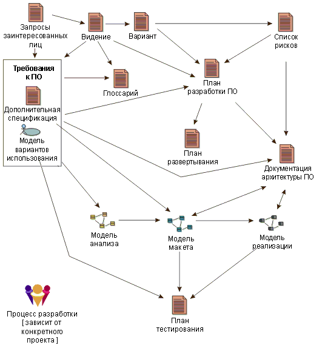

| Продукт работы |
 |
|
Продукт работы - это абстрактная концепция, применяемая для обобщения конкретных типов продуктов работы: артефактов, исходов и результатов. Описания продуктов работы характеризуют типы продуктов работы, а не экземпляры. Таким образом, экземпляр продукта работы привязан к конкретному типу продуктов работы, но не к отдельным экземплярам продуктов работы этого типа. Однако для простоты слово "тип" при обсуждении продуктов работы UMA обычно опускается. Продукт работы - это абстрактная модель описания элементов наполнения, образующих все, что используется, изменяется или создается в результате выполнения задачи. Роли пользуются продуктами работы для выполнения задач и создают продукты работы в результате их выполнения. За каждый продукт работы отвечает конкретная роль, что упрощает управление ответственностью и передает идею о том, что для создания любого информационного объекта требуется определенный набор навыков и умений. Притом что продукты работы определенного типа могут "принадлежать" одной роли, другим ролям может быть разрешено использовать и изменять их.  Распространенные продукты работы в процессах разработки программного обеспечения и взаимосвязь между ними. Продукт работы - это общее название объектов, которые в разных процессах могут называться артефактами, блоками работы и т.д. В архитектуре UMA результаты рассматриваются в качестве подмножеств продуктов работы, которые в результате передаются заказчикам и пользователям, обычно в рамках передачи продукта. |
© Copyright IBM Corp. 1987, 2005 Все права защищены |